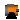

This package contains definitions for the graphical layout of machines. The icons can be utilized by inheriting them in the desired class using "extends" or by directly copying the "icon" layer.
Extends from Modelica.Icons.Package (Icon for standard packages).
| Name | Description |
|---|---|
| TransientMachine | |
| QuasiStationaryMachine | |
|  FundamentalWaveMachine | |
This icon is designed for a transient machine model.
partial model TransientMachineend TransientMachine;
This icon is designed for a quasistationary machine model.
partial model QuasiStationaryMachineend QuasiStationaryMachine;
This icon is designed for a fundamentalwave machine model.
partial model FundamentalWaveMachineend FundamentalWaveMachine;
This icon is designed for a transient transformer model.
model TransientTransformerend TransientTransformer;
This icon is designed for a quasistationary transformer model.
partial model QuasiStationaryTransformerend QuasiStationaryTransformer;